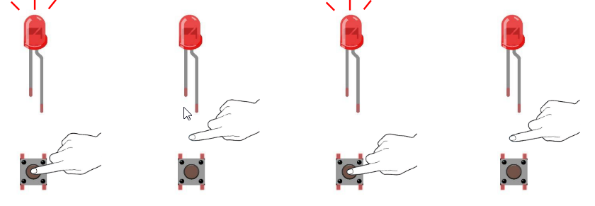
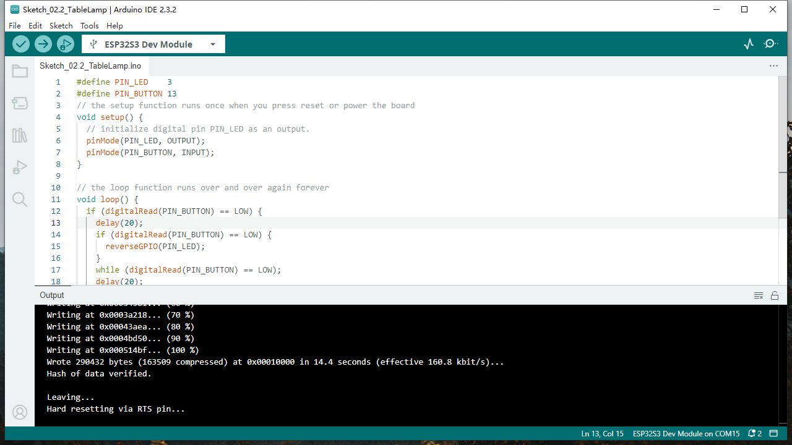

Chapter 2 Button & LED
Usually, there are three essential parts in a complete automatic control device: INPUT, OUTPUT, and CONTROL. In last section, the LED module was the output part and ESP32-S3 was the control part. In practical applications, we not only make LEDs flash, but also make a device sense the surrounding environment, receive instructions and then take the appropriate action such as LEDs light up, make a buzzer turn ON and so on.

Next, we will build a simple control system to control a LED through a push button switch.
Project 2.1 Button & LED
In the project, we will control the LED state through a Push Button Switch. When the button is pressed, our LED will turn ON, and when it is released, the LED will turn OFF.
Component List
Raspberry Pi Pico W x1
830 Tie-Points Breadboard x1
LED x1
Resistor 220Ω x1
Resistor 10kΩ x2
Jumper Wire Several
Button x1
Component knowledge
Connect

Sketch
This project is designed for learning how to use push button switch to control a LED. We first need to read the state of switch, and then determine whether to turn the LED ON in accordance to the state of the switch. Upload following sketch: LAFVIN_Super_Starter_Kit_For_Esp32_S3SketchesSketch_02.1_ButtonAndLed.

Download the code to ESP32-S3 WROOM, then press the key, the LED turns ON, release the switch, the LED turns OFF.
Code
The following is the program code:
#define PIN_LED 2
#define PIN_BUTTON 13
// the setup function runs once when you press reset or power the board
void setup() {
// initialize digital pin PIN_LED as an output.
pinMode(PIN_LED, OUTPUT);
pinMode(PIN_BUTTON, INPUT);
}
// the loop function runs over and over again forever
void loop() {
if (digitalRead(PIN_BUTTON) == LOW) {
digitalWrite(PIN_LED,LOW);
}else{
digitalWrite(PIN_LED,HIGH);
}
}
Project 2.2 MINI table lamp
We will also use a push button switch, LED and ESP32-S3 to make a MINI table lamp but this will function differently: Press the button, the LED will turn ON, and pressing the button again, the LED turns OFF. The ON switch action is no longer momentary (like a door bell) but remains ON without needing to continually press on the Button Switch. First, let us learn something about the push button switch.
Sketch
Sketch_02.2_Tablelamp

Download the code to the ESP32-S3 WROOM, press the button, the LED turns ON, and press the button again, the LED turns OFF.
